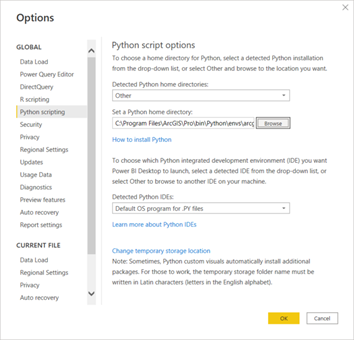
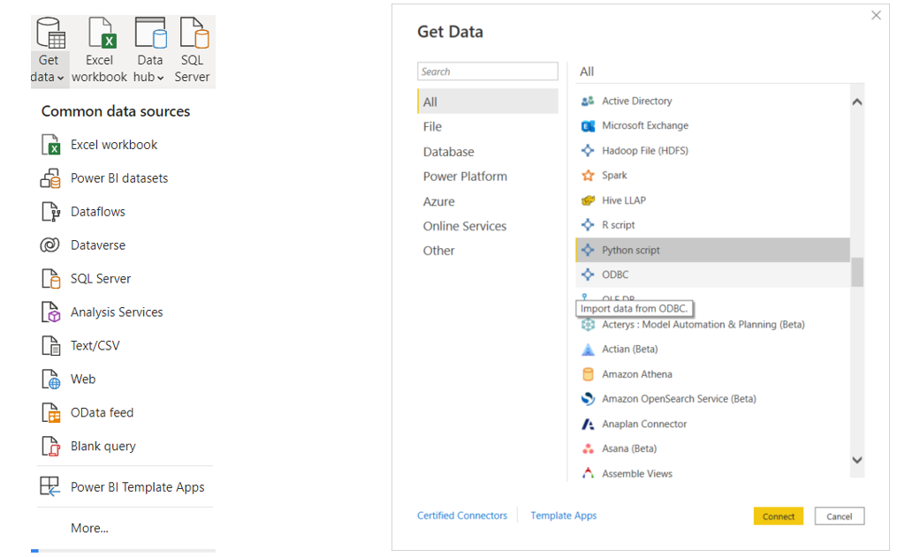
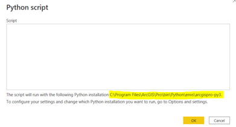
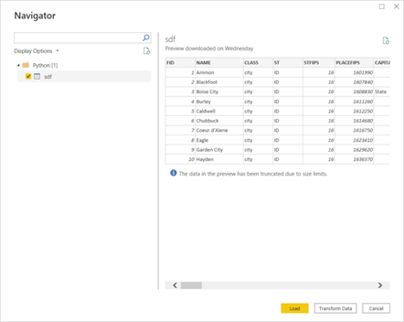
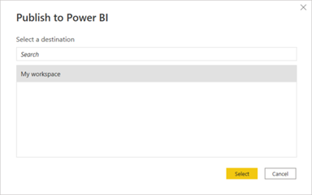
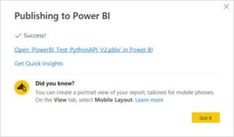
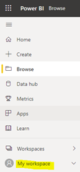
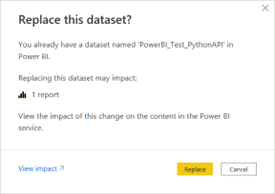
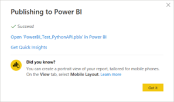

What’s the fuss?
If you’re like me and frequently use Python to automate GIS and data analysis workflows, then you are likely aware of Esri’s newest development API–ArcGIS API for Python. The API is a Pythonic based library that allows users the ability to map, manage, analyze, and visualize their geospatial data directly from their AGOL or Enterprise environments. What makes this API so exciting and powerful is that it can be easily integrated with third party applications, such as Power BI, to extend web-based geospatial analysis and content into data analysis and business analysis workflows outside of the Esri platform.
Like Esri’s other Pythonic based library, Arcpy, ArcGIS API for Python is easy to use and is packaged with each ArcGIS Pro istallation–which makes it an accessible option for integration into your existing data anlysis pipelines and tools.
Use Case
This tutorial will walk you through implementation of ArcGIS API for Python within the Power BI environment to consume ArcGIS Hosted Feature Layers as Python data sources, that then can be used in Power BI reports and dashboards. All you will need for this workflow is to be signed-in to your ArcGIS account in ArcGIS Pro and have access to a Power BI Pro license or greater.
It is assumed that you have a basic understanding of Python syntax and some familiairty with the ArcGIS API for Python. If you need resources on either, check out Real Python for Python basics and Esri’s developers documentation for an overview on the API.
Getting Started
The first step in this implementation is to set the Python environment in Power BI to the arcgispro-py3 package available within your ArcGIS Pro installation. Please note, this workflow will only work within environments where ArcGIS Pro and Power BI Desktop are available on the same machine, and you must be signed-in to an active AGOL or Portal in ArcGIS Pro before proceeding with the following steps.
Step 1. Open Power BI desktop and navigate to File>Options and settings>Options>Python scripting. The options window will appear, you will then select “Browse” under “Python scripting options.
Step 2: Select “Browse” and navigate to the location of the acrgispro-py3 package. For most users, this will be located in C:>Program Files>ArcGIS>Pro>bin>Python>envs. Select the folder named “arcgispro-py3” and click “OK”. Leave all other settings the same and click “OK” to accept these changes.

Get Data
The following steps will show you how to call the arcgis module within the arcgispro-py3 package installed with ArcGIS Pro. This module will allow you to query available services from your AGOL or Enterprise accounts, that you can then analyze and visualize in Power BI desktop.
Step 1. Click on “Get data”  in the Data toolbar on the Home ribbon in Power BI desktop, and select “More” in the options drop down. The Get Data window will appear with All sources as the default option. Here you can either scroll to find “Python script” or click “Other”.
in the Data toolbar on the Home ribbon in Power BI desktop, and select “More” in the options drop down. The Get Data window will appear with All sources as the default option. Here you can either scroll to find “Python script” or click “Other”.

Step 2. Select “Python script” as your data source. The Python script window will appear and this is where you will add your Python code. The installation settings at the bottom of the window should list “arcgispro-py3” as the active python environment. If this is not the case, complete the steps laid out under “Getting Started”.

Step3. Enter the following code into the code block under “Script” and click “OK”. The Navigator window will appear and the Hosted Feature Layer will appear as a new table named “sdf”.
Note: The string of characters in the .get() function is the Item ID of the Hosted Feature Layer you will use for this exercise. Optionally, you can use the Item ID of content from your own organization if you would like. If you would like to learn more about Item IDs and where to find this information in AGOL or Portal, you can read about it here.
```{python}
from arcgis.gis import GIS
gis = GIS("pro")
service = gis.content.get("85d0ca4ea1ca4b9abf0c51b9bd34de2e")
fs = service.layers[0]
sdf = fs.query().sdf
```Step 4. Select the checkbox next to “sdf” in the Navigator window to view the underlying data in the preview pane. Here you can either load the data as is into the visualization canvas in Power BI desktop, or you can transform the data using Power Query. For this exercise, you simply need to load the data into the visualization canvas. Click “Load”.

Publish
For this exercise you will skip any visualization of the Hosted Feature Layer data you have imported into Power BI desktop. The next step in this implementation will be to publish this report and dataset to your Power BI Service environment.
Step 1. Save the Power BI report as is.
Step 2. Click on “Publish” in the Share toolbar of the Home ribbon. The Publish to Power BI window will appear.
Step 3. Select “My workspace” under Select a destination and click “Select”. Optionally, you could select any available workspaces you wish to publish to. For this exercise, we will select the default workspace (“My workspace”).

Step 4. Select the hyperlink that appears once publishing is complete. You will be directed to the Power BI service environment where the dataset has been published. You may be prompted to log-in to Microsoft at this point, in which case, follow all prompts to login then navigate to the Power BI workspace.

Step 5. Click on “My Workspace” to open the workspace in Power BI Service. You will now be able to view the Power BI report and dataset that you just published.

Refresh
As of the writing of this guide, Microsoft does not support auto-refreshes of the Python script data source. The work around for updating this data source is to manually run a refresh in Power BI desktop then republish the dataset.
Step 1. Open the Power BI report with the Hosted Feature Layer you need to update.
Step 2. Click on the “Refresh” button in the Queries toolbar of the Home ribbon. The Refresh window will appear and then close once the refresh is successful.
Step 3. Save your Power BI report.
Step 4. Click “Publish” and select the desired workspace under Select a destination and click “Select”.
Step 5. You will receive a warning about replacing the existing dataset, choose to replace by selecting “Replace” in the Replace this dataset window.

Step 6. Close the Publishing to Power BI window once the dataset has successfully finished.

All Done
That’s it! If you’ve it made it to this point in the post, that means you’ve successfully loaded the Hosted Feature Layer as a data source in yout Power BI report and published the data to your Power BI workspace. At this point, you’re ready to begin slicing and dicing the data to your heart’s content.